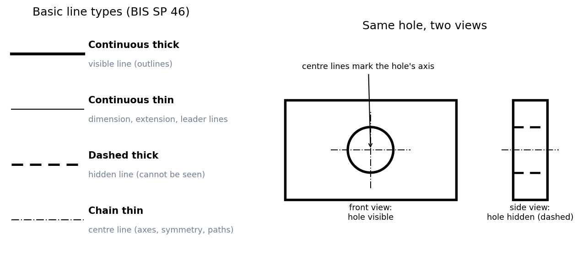

Lettering and Types of Lines
A drawing is read by shape and by words. Lettering must be legible and uniform so nobody misreads a number, and line types are a code: thickness and pattern say what each line means (an edge you can see, an edge you cannot, an axis, a dimension). Learn the code and any drawing becomes readable.
Lettering
Two requirements: legibility (clear at a glance) and uniformity (same style throughout). Uniformity covers size (text height), line thickness, shape, space between letters and space between words. Typical bad lettering: not uniform in style, height, slope or stroke; wrong spacing.
Lettering type B (BIS SP 46:2003): main title mm, subtitles mm, dimensions and notes mm. Stroke thickness is ; letters may be vertical or sloped at .
Types of lines

Figure: Left, the four basic line types. Right, a plate with a hole drawn in two views: in the front view the hole is visible (thick circle, with thin centre lines), in the side view it is hidden (thick dashed lines).
| Appearance | Name by application | Used for |
|---|---|---|
| Continuous thick | Visible line | edges and outlines you can see in this view |
| Continuous thin | Dimension, extension, leader lines | Dimensioning - Dimension, Extension and Leader Lines |
| Dashed thick | Hidden line | features that cannot be seen in this view |
| Chain thin | Centre line | symmetry, centres of circles, axes of axisymmetric parts, paths of motion |
🎯 Predict first: a hidden line and a visible line meet at the same corner. Which one wins where they overlap?
The visible line is drawn, and the hidden line is omitted there. Priority is: visible over hidden, hidden over centre line (a centre line stops short of crossing a visible edge it would coincide with). The reader should never have to guess which line is which.
flowchart TD
A["a line in the view"] --> B{"Is the edge visible from this side?"}
B -->|"yes"| C["continuous thick"]
B -->|"no, hidden behind material"| D["dashed thick"]
A --> E{"Is it an axis or symmetry line?"}
E -->|"yes"| F["chain thin"]
A --> G{"Is it for dimensioning?"}
G -->|"yes"| H["continuous thin"]
⚠️ Mixing line thicknesses
A thin dimension line drawn as thick will be mistaken for an edge. Keep thick lines clearly thicker than thin ones, and all three dimensioning lines thin so they cannot be confused with the part.
🧠 Remember the pattern
Thick = the part itself (visible solid, hidden dashed). Thin = information about the part (dimensions, centres). Dashes mean "behind"; chains mean "axis".
Self-check
Connections
- Previous: Drawing Scales · Next: Dimensioning - Dimension, Extension and Leader Lines
- Course map: Engineering Drawing - MOC
Metadata
- Status: draft · Type: concept · Difficulty: beginner
- Course map: Engineering Drawing - MOC